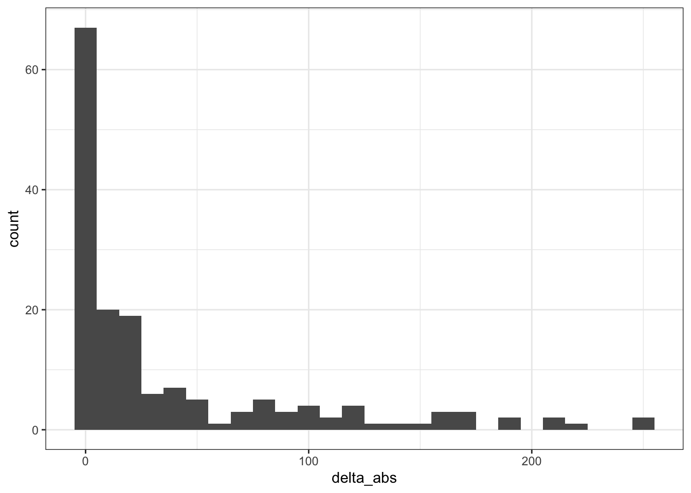

Última atualização: 2020-06-28 03:51:56
master_table <-
ibge_data %>%
mutate(key = squash_string(
make_place_key(
Nome_Município,
Nome_UF
)
))
problem_names_c <- by_city_monthly %>%
mutate(key = squash_string(make_place_key(Cidade, Estado))) %>%
mutate(exists = key %in% master_table$key) %>%
filter(exists == FALSE)
# Pull unique values
(problem_names_c %>% pull(key) %>% unique)## [1] "brazlandia - distrito federal" "ceilandia - distrito federal"
## [3] "gama - distrito federal" "guara - distrito federal"
## [5] "nucleo bandeirantes - distrito federal" "paranoa - distrito federal"
## [7] "planaltina - distrito federal" "samambaia - distrito federal"
## [9] "sobradinho - distrito federal" "taguatinga - distrito federal"
## [11] "senador la roque - maranhao" "governador edson lobao - maranhao"
## [13] "poxoreo - mato grosso" "sao thome das letras - minas gerais"
## [15] "brasopolis - minas gerais" "santarem - paraiba"
## [17] "lagoa do itaenga - pernambuco" "iguaraci - pernambuco"
## [19] "santana do livramento - rio grande do sul" "espigao do oeste - rondonia"
## [21] "biritiba-mirim - sao paulo" "sao valerio da natividade - tocantins"
## [23] "fortaleza do tabocao - tocantins" "parati - rio de janeiro"
## [25] "olhos d'agua - minas gerais" "sem peixe - minas gerais"
## [27] "amparo da serra - minas gerais" "florinia - sao paulo"
## [29] "piranhas - amapa" "porto real do colegio - amapa"
## [31] "porto de pedras - amapa" "poco das trincheiras - amapa"
## [33] "pao de acucar - amapa" "santana do ipanema - amapa"
## [35] "sao bras - amapa" "sao jose da laje - amapa"
## [37] "taquarana - amapa" "uniao dos palmares - amapa"
## [39] "agua branca - amapa" "arapiraca - amapa"
## [41] "atalaia - amapa" "barra de sao miguel - amapa"
## [43] "belem - amapa" "canapi - amapa"
## [45] "capela - amapa" "craibas - amapa"
## [47] "dois riachos - amapa" "jacuipe - amapa"
## [49] "jaramataia - amapa" "jundia - amapa"
## [51] "junqueiro - amapa" "maceio - amapa"
## [53] "major isidoro - amapa" "maragogi - amapa"
## [55] "matriz de camaragibe - amapa" "messias - amapa"
## [57] "olho d'agua do casado - amapa" "palmeira dos indios - amapa"
## [59] "penedo - amapa" "serido - paraiba"
## [61] "graccho cardoso - sergipe" "arez - rio grande do norte"
## [63] "couto de magalhaes - tocantins" "eldorado dos carajas - para"
## [65] "santa isabel do para - para" "jequirica - bahia"
## [67] "campo de santana - paraiba"problem_names_cs <- by_city_yearly %>%
mutate(key = squash_string(make_place_key(Cidade, Estado))) %>%
mutate(exists = key %in% master_table$key) %>%
filter(exists == FALSE)
# Pull unique values
(problem_names_cs %>% pull(key) %>% unique)## [1] "brazlandia - distrito federal" "ceilandia - distrito federal"
## [3] "gama - distrito federal" "guara - distrito federal"
## [5] "nucleo bandeirantes - distrito federal" "paranoa - distrito federal"
## [7] "planaltina - distrito federal" "samambaia - distrito federal"
## [9] "sobradinho - distrito federal" "taguatinga - distrito federal"
## [11] "senador la roque - maranhao" "governador edson lobao - maranhao"
## [13] "poxoreo - mato grosso" "sao thome das letras - minas gerais"
## [15] "sem peixe - minas gerais" "olhos d'agua - minas gerais"
## [17] "brasopolis - minas gerais" "amparo da serra - minas gerais"
## [19] "santarem - paraiba" "lagoa do itaenga - pernambuco"
## [21] "iguaraci - pernambuco" "parati - rio de janeiro"
## [23] "santana do livramento - rio grande do sul" "espigao do oeste - rondonia"
## [25] "florinia - sao paulo" "biritiba-mirim - sao paulo"
## [27] "sao valerio da natividade - tocantins" "fortaleza do tabocao - tocantins"
## [29] "serido - paraiba" "arez - rio grande do norte"
## [31] "graccho cardoso - sergipe" "couto de magalhaes - tocantins"
## [33] "santa isabel do para - para" "eldorado dos carajas - para"
## [35] "jequirica - bahia" "campo de santana - paraiba"c(pull(problem_names_c, key), pull(problem_names_cs, key)) %>% unique## [1] "brazlandia - distrito federal" "ceilandia - distrito federal"
## [3] "gama - distrito federal" "guara - distrito federal"
## [5] "nucleo bandeirantes - distrito federal" "paranoa - distrito federal"
## [7] "planaltina - distrito federal" "samambaia - distrito federal"
## [9] "sobradinho - distrito federal" "taguatinga - distrito federal"
## [11] "senador la roque - maranhao" "governador edson lobao - maranhao"
## [13] "poxoreo - mato grosso" "sao thome das letras - minas gerais"
## [15] "brasopolis - minas gerais" "santarem - paraiba"
## [17] "lagoa do itaenga - pernambuco" "iguaraci - pernambuco"
## [19] "santana do livramento - rio grande do sul" "espigao do oeste - rondonia"
## [21] "biritiba-mirim - sao paulo" "sao valerio da natividade - tocantins"
## [23] "fortaleza do tabocao - tocantins" "parati - rio de janeiro"
## [25] "olhos d'agua - minas gerais" "sem peixe - minas gerais"
## [27] "amparo da serra - minas gerais" "florinia - sao paulo"
## [29] "piranhas - amapa" "porto real do colegio - amapa"
## [31] "porto de pedras - amapa" "poco das trincheiras - amapa"
## [33] "pao de acucar - amapa" "santana do ipanema - amapa"
## [35] "sao bras - amapa" "sao jose da laje - amapa"
## [37] "taquarana - amapa" "uniao dos palmares - amapa"
## [39] "agua branca - amapa" "arapiraca - amapa"
## [41] "atalaia - amapa" "barra de sao miguel - amapa"
## [43] "belem - amapa" "canapi - amapa"
## [45] "capela - amapa" "craibas - amapa"
## [47] "dois riachos - amapa" "jacuipe - amapa"
## [49] "jaramataia - amapa" "jundia - amapa"
## [51] "junqueiro - amapa" "maceio - amapa"
## [53] "major isidoro - amapa" "maragogi - amapa"
## [55] "matriz de camaragibe - amapa" "messias - amapa"
## [57] "olho d'agua do casado - amapa" "palmeira dos indios - amapa"
## [59] "penedo - amapa" "serido - paraiba"
## [61] "graccho cardoso - sergipe" "arez - rio grande do norte"
## [63] "couto de magalhaes - tocantins" "eldorado dos carajas - para"
## [65] "santa isabel do para - para" "jequirica - bahia"
## [67] "campo de santana - paraiba"list_df <- list(city_monthly_table = by_city_monthly,
cities_yearly_table = by_city_yearly,
states_monthly_table = by_state_monthly,
states_yearly_table = by_state_yearly)
summary <- list_df %>%
map(. %>%
group_by(Ano, Estado) %>%
summarise(Registros = sum(Registros))
)## `summarise()` regrouping output by 'Ano' (override with `.groups` argument)
## `summarise()` regrouping output by 'Ano' (override with `.groups` argument)
## `summarise()` regrouping output by 'Ano' (override with `.groups` argument)
## `summarise()` regrouping output by 'Ano' (override with `.groups` argument) for (i in seq_along(summary)) {
summary[[i]]$table <- rep(names(summary[i]), nrow(summary[[i]]))
}
summary %>%
bind_rows %>%
pivot_wider(names_from = table, values_from = Registros)## # A tibble: 162 x 6
## # Groups: Ano [6]
## Ano Estado city_monthly_table cities_yearly_table states_monthly_table states_yearly_table
## <dbl> <chr> <dbl> <dbl> <dbl> <dbl>
## 1 2015 Acre 2526 2526 2526 2526
## 2 2015 Alagoas 7765 7765 7765 7765
## 3 2015 Amapá 2712 2144 2144 2144
## 4 2015 Amazonas 2909 2909 2909 2909
## 5 2015 Bahia 31705 31705 31705 31705
## 6 2015 Ceará 8622 8622 8622 8622
## 7 2015 Distrito Federal 13906 13906 13906 13906
## 8 2015 Espírito Santo 22563 22563 22563 22563
## 9 2015 Goiás 23927 23927 23927 23927
## 10 2015 Maranhão 2082 2082 2082 2082
## # … with 152 more rowsca <- yearly_aggregate(by_city_monthly)## `summarise()` ungrouping output (override with `.groups` argument)DT::datatable(ca)csa <- yearly_aggregate(by_city_yearly)## `summarise()` ungrouping output (override with `.groups` argument)DT::datatable(csa)sa <- yearly_aggregate(by_state_monthly)## `summarise()` ungrouping output (override with `.groups` argument)DT::datatable(sa)ssa <- yearly_aggregate(by_state_yearly)## `summarise()` ungrouping output (override with `.groups` argument)DT::datatable(ssa)bind_rows("cities_monthly" = ca,
"cities_yearly" = csa,
"states_monthly" = sa,
"states_yearly" = ssa,
.id = "origin_table") %>%
pivot_wider(names_from = origin_table, values_from = Registros) %>%
DT::datatable()cma <- by_city_monthly %>%
group_by(Estado, Ano) %>%
summarise(Registros = sum(Registros))## `summarise()` regrouping output by 'Estado' (override with `.groups` argument)cysa <- by_city_yearly %>%
select(Cidade, Estado, Ano, Registros) %>%
group_by(Estado, Ano) %>%
summarise(Registros = sum(Registros))## `summarise()` regrouping output by 'Estado' (override with `.groups` argument)combined_cities <-
bind_rows("cities" = cma, "cities_summary" = cysa, .id = "origin_table") %>%
pivot_wider(names_from = origin_table, values_from = Registros) %>%
mutate(delta_abs = abs(cities_summary - cities))
summary(combined_cities)## Estado Ano cities cities_summary delta_abs
## Length:162 Min. :2015 Min. : 881 Min. : 881 Min. : 0.00
## Class :character 1st Qu.:2016 1st Qu.: 7111 1st Qu.: 7111 1st Qu.: 0.00
## Mode :character Median :2018 Median : 14974 Median : 14974 Median : 0.00
## Mean :2018 Mean : 35189 Mean : 35203 Mean : 21.12
## 3rd Qu.:2019 3rd Qu.: 36142 3rd Qu.: 36234 3rd Qu.: 0.00
## Max. :2020 Max. :311777 Max. :311777 Max. :1376.00combined_cities %>%
filter(delta_abs != 0) %>%
arrange(-delta_abs) %>%
DT::datatable()ggplot(combined_cities) + geom_histogram(aes(delta_abs), binwidth = 10)
sma <- by_state_monthly %>%
group_by(Estado, Ano) %>%
summarise(Registros = sum(Registros))## `summarise()` regrouping output by 'Estado' (override with `.groups` argument)sysa <- by_state_yearly %>%
select(Estado, Ano, Registros)
combined_states <-
bind_rows("states" = sma, "states_summary" = sysa, .id = "origin_table") %>%
pivot_wider(names_from = origin_table, values_from = Registros) %>%
mutate(delta_abs = abs(states_summary - states))
summary(combined_states)## Estado Ano states states_summary delta_abs
## Length:162 Min. :2015 Min. : 881 Min. : 881 Min. : 0.00
## Class :character 1st Qu.:2016 1st Qu.: 7111 1st Qu.: 7111 1st Qu.: 0.00
## Mode :character Median :2018 Median : 14974 Median : 14974 Median : 0.00
## Mean :2018 Mean : 35173 Mean : 35203 Mean : 29.32
## 3rd Qu.:2019 3rd Qu.: 36212 3rd Qu.: 36234 3rd Qu.: 0.00
## Max. :2020 Max. :311777 Max. :311777 Max. :1024.00combined_states %>%
filter(delta_abs != 0) %>%
arrange(-delta_abs) %>%
DT::datatable()ggplot(combined_states) + geom_histogram(aes(delta_abs), binwidth = 10)